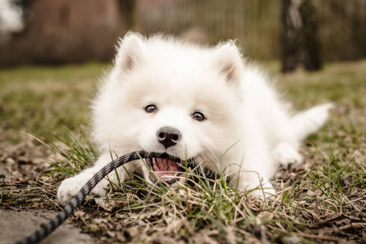

Samoyeds are medium-sized, fluffy dogs known for their friendly and gentle temperament. Their thick, white coats and signature "Sammy smile" give them an expressive and joyful appearance.
Fun Fact: Samoyeds were originally bred by the nomadic Samoyedic people of Siberia to herd reindeer and pull sleds, making them excellent working dogs that thrive in cold climates.
Back to Gallery